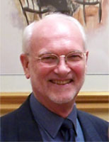

Tony was for many years a member of York RMS and also a former Chairman of the Yorkshire Regional Group (as it was known in his time). He was closely involved in organising the Yorkshire Group weekends, firstly in Scarborough but latterly at Ilkley, and even produced the programme leaflets himself – a task he continued to undertake after standing down from the regional committee. The original leaflets for the 2020 Ilkley weekend, now unfortunately postponed, were also produced by him.
For a number of years Tony was a member of the FRMS national committee and took on the rôle of Bulletin Distribution Manager. He was also involved in the efforts some years ago to ensure that the FRMS remained “on track” at a time when the good governance of the then committee was being called into question.
In recent years Tony was in poor health, which restricted his mobility, but he continued as far as was possible to present programmes to societies. This was an activity which he enjoyed, and as he was keen to encourage others he produced for the FRMS a leaflet on presenting programmes; this is still available and can be found via a link on this website.
We have since heard that Tony’s wife, Muriel, died shortly after Tony and we extend our sympathy to the members of his family.
Allan Child
FRMS Chairman